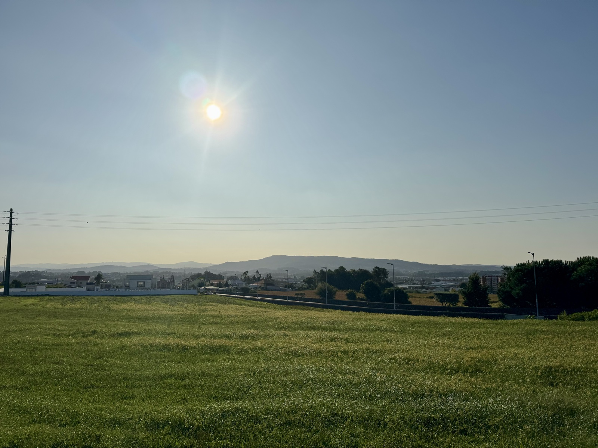
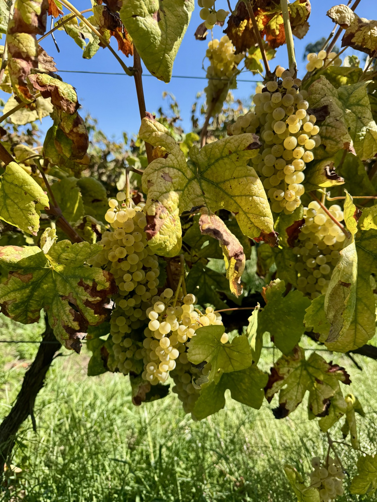
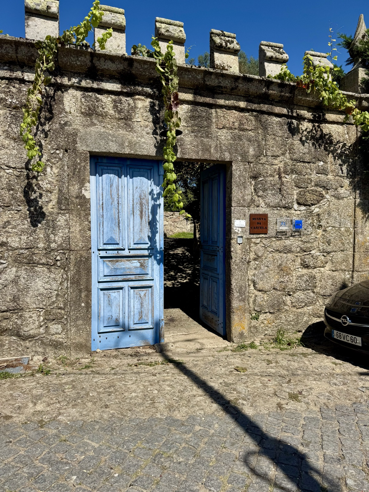
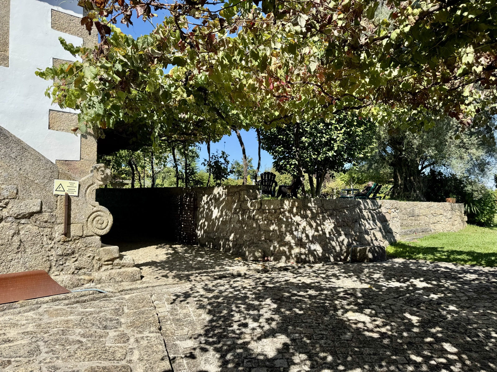

Stage 3
Data: 1,375 feet of elevation.
Hotel: Quinta Da Cancela (wow)
After a long hard sleep, we set off for a brief 9 mile hike today. We began in the center of Barcelo marketplace. We hiked through the city past an elementary school. The children were scurrying about, playing hopscotch, and gently being herded by their teachers to enter the school. As we walked by, several of the children saw us and rushed over to the stone wall to clap for us. Many children yelled “bom Camino” as we walked by. I stood in amazement as these children have obviously been raised to respect the Camino its worldwide pilgrims who, in turn, appreciate their country. Most of the people I have met on the Camino so far have been from anywhere, but Portugal. This includes: Australia, France, England, Japan, the Netherlands, and of course the United States. The children came to clap for us. All of us. What a stark contrast to the Trump administration’s distain for world cultures other than Americans. It was a beautiful thing and it warmed my heart to see the glee in their faces. They gave me hope. It can be different. It must be different. It will be different. We must turn our country right side up.
The remainder of our journey was through farmlands. Herds of cows, pig pens, and agricultural crops painted a beautiful landscape. My favorite part, of course, were the fields of grapevines. White and purple grapes lined both sides of the Camino path for several miles. Additionally, it appears that every home has its own grapevines! Pomegranate trees, chestnuts, orange trees also commonly appear on every homestead. It appears that most of the grapes have been harvested. But we did manage to sneak a few to taste. Not too sweet, and not too tart. These must be the green grapes of Vino Verde, which is my new favorite wine—slightly sparkling and so refreshing.


We continued through the rural landscape for 5 more miles and were glad for the shorter mileage today. Yesterday‘s nearly 14 miles proved to be a real challenge for the last 3 miles because of the high elevation and stony ground. Not terribly hard, but certainly not an easy trek. Today in comparison was just a “walk in the park”.
And that is just what we found when we walked through the long, wooden blue doors of our hotel entrance. We were greeted by olive trees, orange trees, lime, trees, and beautiful hydrangeas. Yes, they have hydrangeas in Portugal! Most of them are pinnacle hydrangeas, but the ones surrounding the property of our hotel are very similar to the traditional blue hydrangeas to see on the cape. Our hotel is made of stone and stucco. It is ancient and I’m looking forward to learning more about the history of it at dinner tonight.

While the rest of the crew is out at a laundromat down the street, Claire and I have been sipping vino verde on the lawn overlooking the mountains and the vineyards.

It’s nice to have enough energy today to enjoy the hotel! And this is certainly the one to be appreciate.